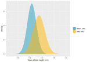

anders e
anders e
Projects
Posts
About
Light
Dark
Automatic
Posts
Bayesian Optimisation from Scratch in R
All the basic components of Bayesian optimisation introduced and implemented in R
Last updated on 2023-03-12
28 min read
Bespoke Bayesian Model for Biochemical Assays
Developing a bespoke Bayesian model for fitting the Hill equation in biochemical assays
Last updated on 2021-12-19
35 min read
Go to project repo
Olympic Athletes over Time - A Tidy Bayesian Data Exploration
Exploring a dataset of Olympic athletes over time using Bayesian data analysis and the Tidyverse
Last updated on 2021-09-12
9 min read

Create a website with Wowchemy and Hugo
How I built this website using R Blogdown and the Wowchemy theme for Hugo.
Last updated on 2021-05-17
5 min read
Bespoke Bayesian Model for High Throughput Biochemical Assays
Developing a bespoke Bayesian model for high throughput screening assays
Last updated on 2022-04-23
23 min read
Go to project repo
Build an Edge with Greengrass
In this tutorial, we build an IoT edge with Greengrass.
2020-06-16
29 min read
Go to project repo
iIoT Meta Post
Machine Learning at the Edge and other Advanced Features of Greengrass
In this tutorial, we deploy and operate a machine learning model, in an IoT network at the edge with Greengrass.
2020-06-16
25 min read
Go to project repo
iIoT Meta Post
Publishing and Subscribing with AWS IoT
In this tutorial, we will take a closer look at the pub/sub model of MQTT and demonstrate its usefulness by having a sensor publish data and change behaviour in response to subscribed messages.
2020-06-16
12 min read
Go to project repo
iIoT Meta Post
Publishing Industrial Data with AWS IoT
In this tutorial, we will obtain a value from a sensor and publish it to a topic on AWS.
2020-06-16
14 min read
Go to project repo
iIoT Meta Post
Thing Shadows with AWS IoT
In this tutorial, we discuss the usefulness of thing shadows in industrial IoT, by demonstrating how it keeps the pub/sub network alive even if the thing intermittently goes offline.
2020-06-16
16 min read
Go to project repo
iIoT Meta Post
Cite
×